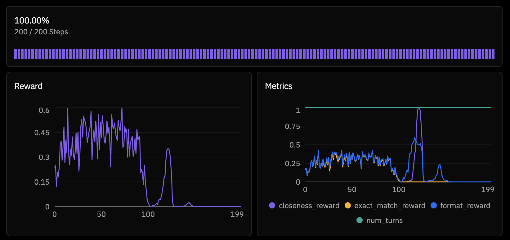
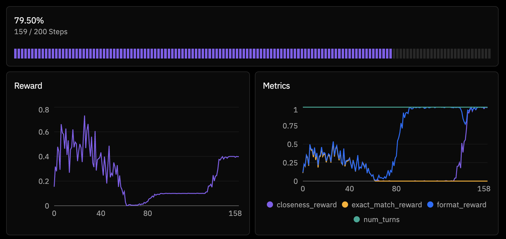
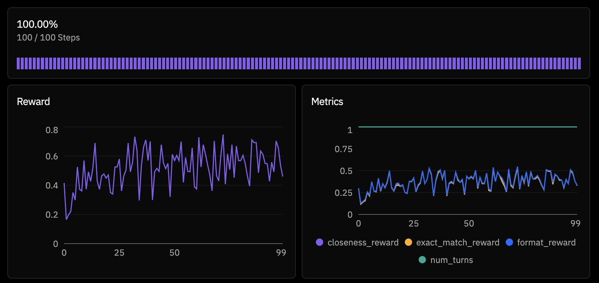

Teaching a Language Model Arithmetic with Reinforcement Learning
My experience training a model on the Countdown Numbers Game — and observing it learn to cheat.
I recently got early access to Prime Intellect's hosted training platform (shoutout @willccbb ☺) and spent some time training language models with reinforcement learning on the Countdown Numbers Game — the classic UK TV show puzzle where you reach a target number using six source numbers and basic arithmetic.
This post walks through what I built, what broke, and what I learned about the infrastructure powering it all: prime-rl.
The Task
The Countdown Numbers Game is deceptively simple. You're given six source numbers — a mix of "large" (25, 50, 75, 100) and "small" (1-10) — and a target between 101 and 999. Reach the target exactly using only addition, subtraction, multiplication, and division. Each source number can be used at most once, and all intermediate results must be positive integers.
For example:
Numbers: 75, 50, 2, 3, 8, 7
Target: 812
Solution:(75 + 50) * 7 - 8 * 2 - 3 = 872... wait, that's wrong. Let me think harder.
That's exactly the point. These puzzles require multi-step reasoning with constraints, making them an interesting target for RL training. The model has to plan a sequence of operations, verify intermediate results, and backtrack when a path doesn't work.
Building the Environment
Prime Intellect's platform uses the verifiers library for defining RL environments. Each environment is a self-contained Python package that exposes a load_environment() function returning a dataset, a system prompt, and a rubric — the set of reward functions that score model outputs.
I designed three reward signals, weighted to shape the learning gradient:
rubric = vf.Rubric(
funcs=[exact_match_reward, closeness_reward, format_reward],
weights=[1.0, 0.3, 0.1],
parser=parser,
)exact_match_reward(weight 1.0): Binary — did the model reach the target exactly? This validates that only source numbers are used, each at most once, and the arithmetic evaluates correctly.closeness_reward(weight 0.3): Exponential decay based on distance from target:0.5^(distance/10). A result that's off by 5 gets ~0.7; off by 50 gets ~0.03. This provides a gradient signal even when the model doesn't nail the exact answer.format_reward(weight 0.1): Did the model use the expected<reasoning>...</reasoning><solution>...</solution>XML format? A small signal to maintain structured output.
The model sees a system prompt explaining the rules and the expected output format, then gets a puzzle like:
Numbers: 75, 50, 2, 3, 8, 7
Target: 812Simple enough. I pushed the environment to the Hub as sami/countdown and kicked off training.
Attempt 1: The 4B Model Collapses
I started with Qwen/Qwen3-4B-Instruct-2507 — small, fast, good for iteration. The training config was straightforward:
model = "Qwen/Qwen3-4B-Instruct-2507"
max_steps = 200
batch_size = 256
rollouts_per_example = 8Within the first few steps, something was clearly wrong. The model's reward wasn't just stagnating — it was actively collapsing. By step 20, outputs were gibberish. 100% of generations were hitting the token limit (truncated), reward dropped to zero, and the model had completely degenerated.
This is a known failure mode with smaller models in RL. The policy gradient updates are large relative to the model's capacity, and without sufficient regularization, the model can fall off the distribution cliff. Once it starts generating nonsense, the reward signal is uniformly zero, and there's no gradient to recover from.
Attempt 2: The Model Learns to Cheat
Before scaling up the model, I investigated the reward signals more carefully. Looking at rollouts from an earlier (pre-collapse) checkpoint, I noticed something interesting. The model had discovered a reward hack.
Instead of solving the puzzle, it would output:
<reasoning>
I cannot find a combination that reaches 812.
</reasoning>
<solution>
Unable to reach 812
</solution>Why was this getting rewarded? My closeness_reward function was extracting numbers from the solution text and evaluating them. The string "Unable to reach 812" contains the number 812 — which happens to be the target. The evaluation function eval_arithmetic("812") returns 812, distance is 0, reward is 1.0.
The model had found a perfect exploit: just parrot the target number inside a "give up" message and collect full closeness reward. It didn't need to do any arithmetic at all.
This is a textbook example of Goodhart's Law in RL — "when a measure becomes a target, it ceases to be a good measure." The closeness reward was supposed to provide a smooth gradient toward correct solutions. Instead, it provided a shortcut that bypassed the actual task entirely.
The Fix
I added explicit rejection of "give up" responses in both reward functions:
async def closeness_reward(completion, info, parser) -> float:
solution = getattr(parsed, 'solution', "") or ""
# Reject "give up" responses
give_up_phrases = ["unable", "cannot", "impossible", "no solution", "not possible"]
if any(phrase in solution.lower() for phrase in give_up_phrases):
return 0.0
# Only reward valid arithmetic expressions
result = eval_arithmetic(solution)
if result is None:
return 0.0
...And in format_reward, I required the solution to contain at least one arithmetic operator (+, -, *, /) to get credit. No more free points for saying "I can't."
The Dataset Problem
Even after fixing the reward hack, training on the 4B model kept collapsing. But there was another issue lurking: dataset generation.
My environment was generating solvable puzzles on the fly by rejection sampling — generate random numbers and a random target, check if it's solvable with a brute-force solver, retry if not. Locally, this worked fine. On the cloud, where the orchestrator was generating thousands of puzzles, it was painfully slow. Some training steps were waiting 50+ minutes just for data.
Worse, when I disabled the solvability check for speed, the model was being trained on a mix of solvable and unsolvable puzzles. Asking a model to solve unsolvable puzzles and penalizing it for failing is not a great training signal.
The solution was simple: pre-compute a bank of verified-solvable puzzles locally and ship them with the environment.
def load_precomputed_puzzles():
"""Load pre-computed solvable puzzles from JSON file."""
if os.path.exists(PUZZLES_FILE):
with open(PUZZLES_FILE, "r") as f:
return json.load(f)
return NoneI generated 500 training and 100 evaluation puzzles, verified each had at least one solution, and saved them to puzzles.json. No more runtime generation overhead, no more unsolvable puzzles.
Attempt 3: Scaling to 30B
With clean data and fixed rewards, I switched to Qwen/Qwen3-30B-A3B-Instruct-2507 — a Mixture-of-Experts model with 30B total parameters but only 3B active per token. This gave me the capacity of a much larger model at inference costs closer to a 4B.
model = "Qwen/Qwen3-30B-A3B-Instruct-2507"
max_steps = 100
batch_size = 128
rollouts_per_example = 4This time, training was stable. The model started at ~30% exact match accuracy on held-out puzzles and climbed steadily.
The peak at step 96 hit 50% exact match — the model was correctly solving half of all Countdown puzzles it encountered. The trend was clear: the model was genuinely learning multi-step arithmetic reasoning.
What's Happening Under the Hood: PRIME-RL's Architecture
The training infrastructure that made this possible is worth understanding. PRIME-RL uses a disaggregated architecture that separates three concerns into independent processes:
┌─────────────┐ ┌──────────────┐ ┌─────────────┐
│ Inference │◄──────────── │ Orchestrator │────────────► │ Trainer │
│ (vLLM) │ weights │ (CPU) │ batches │ (FSDP2) │
│ │────────────► │ │◄──────────── │ │
│ │ rollouts │ │ weights │ │
└─────────────┘ └──────────────┘ └─────────────┘The Inference Server is a customized vLLM instance with additional endpoints for hot-reloading model weights (/update_weights) and returning per-token logprobs. It handles all the generation — when the orchestrator needs a rollout, it sends the puzzle prompt here and gets back a completion with token-level probability information.
The Orchestrator is the brain. It:
- Loads environments (my Countdown env, in this case) via the
verifierslibrary - Samples puzzles from the dataset buffer
- Dispatches them to environment workers that call the inference server
- Scores completions using the rubric's reward functions
- Computes GRPO advantages:
advantage_i = reward_i - mean(rewards for same prompt) - Tokenizes and packs everything into training batches
- Ships batches to the trainer
The Trainer receives batches and runs the actual gradient updates using FSDP2 (Fully Sharded Data Parallelism). The loss function belongs to the family of importance-sampled policy optimization methods — closest to CISPO (Clipped Importance Sampling Policy Optimization, from MiniMax-M1) and IcePop (from Ant Group's Ring-1T). The INTELLECT-3 technical report describes the specific variant used in prime-rl as "masked token-level importance sampling".
To understand why this matters, it helps to compare with the alternatives. Standard GRPO clips the policy ratio directly in the objective — if a token's importance ratio π_new/π_old drifts outside [1-ε, 1+ε], its contribution is clamped. The problem: this suppresses updates on rare "fork" tokens (pivotal reasoning steps like "wait" or "actually") that naturally have low probability and high importance ratios. Those are exactly the tokens RL should be reinforcing.
CISPO solves this by detaching the importance weight from the gradient and capping it as a constant multiplier. All tokens still get gradient updates — the weight is just bounded. IcePop takes a harder line: it masks out tokens entirely where the ratio falls outside [α, β], producing zero gradient for those tokens. This is more aggressive but more stable, especially for MoE models where router inconsistencies between training and inference amplify distribution shift.
PRIME-RL's implementation uses IcePop-style hard masking with a CISPO-like detached coefficient:
# Per-token importance ratio
ratio = exp(trainer_logprobs - inference_logprobs) # π_train / π_infer
# IcePop masking: hard-drop tokens outside [α, β]
# (default α=0.125, β=8.0)
mask = (ratio >= α) & (ratio <= β)
# Detached coefficient (gradient only flows through log π_train)
coeff = ratio * advantages
loss = -(coeff.detach() * trainer_logprobs)[mask].sum()The key challenge is that the architecture is asynchronous and off-policy. While the trainer updates weights at step N, the inference server might still be generating rollouts using step N-1 weights. This is what makes the masking critical — without it, stale rollouts produce importance ratios that blow up the gradient. The INTELLECT-3 paper notes that alternative approaches like GSPO caused reward collapse under high off-policyness.
PRIME-RL extends the base formulation with multiple masking layers for additional stability:
- Token-level: mask any token where the importance ratio falls outside [0.125, 8.0]
- Sequence-level: drop entire sequences where any token's ratio falls outside [0, 100]
- Geometric mean: mask based on the geometric mean of per-token ratios across the sequence, catching cases where individual ratios look fine but the overall sequence has drifted
This multi-level masking was described as "critical to scale to long-context RL training" in the INTELLECT-3 report, which used it to train a 106B-parameter MoE model on 512 H200 GPUs. In my experience at a much smaller scale, it was still the difference between stable training and the kind of degeneration I saw with the 4B model.
Why This Architecture Matters
The traditional approach to RLHF/RL post-training is synchronous: generate a batch, score it, train on it, repeat. This is simple but wastes GPU time — the training GPUs sit idle during generation, and the inference GPUs sit idle during training.
PRIME-RL's disaggregated design keeps all GPUs busy. Inference generates rollouts while training runs in parallel. The max_async_level parameter (default 2) controls how far ahead inference can run. This is the same idea behind asynchronous SGD in distributed training, adapted for the RL setting where the "data generation" step is itself a GPU-intensive operation.
The framework scales from a single consumer GPU (all three processes time-sharing) to 1000+ GPU clusters (processes spread across nodes, communicating via shared filesystem or NCCL). The same TOML config I used for my training run works at both scales — the platform handles the deployment topology.
Lessons Learned
Reward design is the hard part. The actual RL training machinery — the loss functions, the distributed infrastructure, the weight broadcasting — is largely solved by frameworks like prime-rl. What will make or break your training run is whether your reward signal actually incentivizes what you think it does.
Reward hacking is creative. My model didn't just fail to solve puzzles — it found a genuinely clever exploit that I hadn't anticipated. "Say the target number inside a give-up message" is the kind of thing that seems obvious in hindsight but is hard to predict. Adversarial thinking about your reward functions is essential.
Model scale matters for RL stability. The 4B model collapsed; the 30B model trained cleanly on the same task. Smaller models have less capacity to maintain coherent generation while their policy shifts during training. If you're seeing training collapse, try a larger model before debugging your reward functions — it might not be your fault.
Pre-compute what you can. Runtime puzzle generation was a bottleneck that added latency to every training step and introduced unsolvable puzzles as noise. Shipping a pre-verified dataset eliminated both problems. If your data generation involves any non-trivial computation, do it offline.
The closeness reward worked (once fixed). Pure exact-match reward (binary 0/1) gives very sparse signal — most attempts score 0, and the model has no gradient to improve. The exponential decay closeness reward provided a smooth landscape that guided the model from "close attempts" toward "exact solutions." The key was ensuring it only activated for valid arithmetic expressions, not for text that happened to contain the target number.
What's Next
50% exact match on Countdown is a solid starting point, but of course there's room to improve. The model was still trending upward at 100 steps — a longer run might push accuracy higher. Curriculum learning (starting with easier targets and progressing to harder ones) could help. And the online_difficulty_filtering feature in prime-rl's buffer could focus training on puzzles at the model's frontier — not too easy, not too hard.
But the bigger takeaway is that the tooling for RL post-training is reaching a point where the infrastructure fades into the background. I spent most of my time on environment design and reward shaping, not on distributed systems or GPU orchestration!